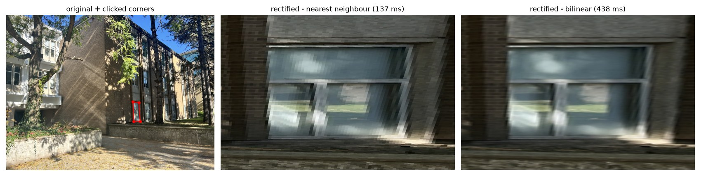
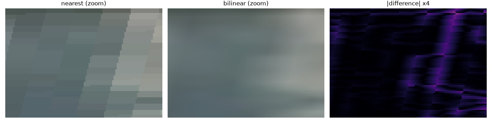
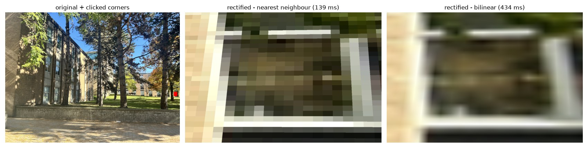
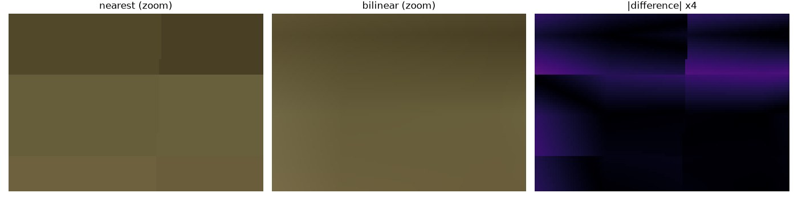

Have you ever wondered how our phones make panoramas? I certainly haven't before this assignment! I did a lot of trusting the process, and everything seemed to work out! But in case you have, this is the read for you! I started by touching some grass and shooting several sets of images, displayed here. We'll use these images for the rest of the assignment. The images feature some sightseeing on UW campus and Waterloo Park. The camera center was kept approximately fixed while rotating between shots, producing projective transformations suitable for the rest of the assignment.

A homography is a transformation that maps points (x,y) in one image to points, (x',y') in another image that correspond to the same feature. This essentially becomes a linear algebra problem, where we want to solve P' ~ H P (equal up to scale), where P and P' are the homogeneous coordinates of the points in the two images, and H is the homography matrix. The homography matrix has 8 degrees of freedom, so we need at least 4 pairs of corresponding points to solve for it. In two images of the same scene, we can usually identify far more than four matching features, so we can use least squares to solve for the homography matrix. The more points we have, the better our estimate of the homography will be. However, we also need to be careful about outliers, which are points that do not correspond to the same feature in both images. Outliers can be caused by noise, occlusions, or incorrect feature matching.
In this first part, the points are selected manually by clicking on matching features in both images; in Part 2, we'll find them automatically using feature detection algorithms. Once we have the corresponding points, we can use them to compute the homography matrix, and in Part 2 we'll use RANSAC to handle outliers.
Before solving for the homography, Hartley normalization is applied to the point coordinates. The coordinates are translated so their centroid is at the origin and scaled so that the mean distance from the origin is sqrt(2). This improves numerical conditioning of the least-squares problem and leads to more stable homography estimates.
def computeH(im1_pts, im2_pts):
"""
H = computeH(im1_pts, im2_pts): n-by-2 arrays of (x, y), returns 3x3 H with p2 ~ H p1.
With exactly 4 points the system is square and solved exactly, but any click error
goes straight into H. With more points the system is OVERDETERMINED, so we solve it
in the least-squares sense (minimise ||A h - b||^2), which averages out the noise.
"""
p1, p2 = np.asarray(im1_pts, float), np.asarray(im2_pts, float)
assert p1.shape == p2.shape and len(p1) >= 4, "need >= 4 matching points"
q1, T1 = _normalize(p1)
q2, T2 = _normalize(p2)
A, b = build_system(q1, q2)
h, *_ = np.linalg.lstsq(A, b, rcond=None)
Hn = np.append(h, 1.0).reshape(3, 3)
H = np.linalg.inv(T2) @ Hn @ T1 # undo the normalisation
return H / H[2, 2]
computeH(im1_pts, im2_pts) builds the linear system below from the clicked correspondences and solves it by least squares.
A point (x,y) in image 1 maps to (x',y') in image 2 with
x' = (a x + b y + c) / (g x + h y + 1)
y' = (d x + e y + f) / (g x + h y + 1)
=> [ x y 1 0 0 0 -x x' -y x' ] h = x'
[ 0 0 0 x y 1 -x y' -y y' ] h = y' h = [a b c d e f g h]^T
Each correspondence adds two rows to A (n points: A is 2n x 8).
==== pair 0 -> 1 (8 correspondences, 16 equations, 8 unknowns) ====
im1_pts (x, y):
[[850.4 589.0]
[890.0 591.7]
[856.7 719.2]
[900.7 719.2]
[933.1 593.4]
[969.0 595.2]
[940.3 717.4]
[978.0 715.6]]
im2_pts (x, y):
[[309.1 594.5]
[355.8 599.9]
[301.9 734.6]
[350.4 730.1]
[400.7 606.2]
[440.2 602.6]
[390.8 731.0]
[427.7 726.6]]
linear system A h = b, h = [a b c d e f g h]^T (raw pixel coordinates):
A =
[[ 850.4 589.0 1.0 0.0 0.0 0.0 -262858.6 -182059.9]
[ 0.0 0.0 0.0 850.4 589.0 1.0 -505562.8 -350160.5]
[ 890.0 591.7 1.0 0.0 0.0 0.0 -316662.0 -210526.9]
[ 0.0 0.0 0.0 890.0 591.7 1.0 -533911.0 -354960.8]
[ 856.7 719.2 1.0 0.0 0.0 0.0 -258637.7 -217126.5]
[ 0.0 0.0 0.0 856.7 719.2 1.0 -629331.8 -528324.3]
[ 900.7 719.2 1.0 0.0 0.0 0.0 -315605.3 -252007.7]
[ 0.0 0.0 0.0 900.7 719.2 1.0 -657601.1 -525087.9]
[ 933.1 593.4 1.0 0.0 0.0 0.0 -373893.2 -237775.4]
[ 0.0 0.0 0.0 933.1 593.4 1.0 -565645.2 -359719.1]
[ 969.0 595.2 1.0 0.0 0.0 0.0 -426553.8 -262007.0]
[ 0.0 0.0 0.0 969.0 595.2 1.0 -583919.4 -358667.5]
[ 940.3 717.4 1.0 0.0 0.0 0.0 -367469.2 -280359.9]
[ 0.0 0.0 0.0 940.3 717.4 1.0 -687359.3 -524419.4]
[ 978.0 715.6 1.0 0.0 0.0 0.0 -418290.6 -306062.1]
[ 0.0 0.0 0.0 978.0 715.6 1.0 -710614.8 -519955.0]]
b = [309.1 594.5 355.8 599.9 301.9 734.6 350.4 730.1 400.7 606.2 440.2 602.6 390.8 731.0 427.7 726.6]
recovered H (p2 ~ H p1):
[[ 5.694241 0.322148 -3698.396063]
[ 1.364704 6.511791 -2429.534893]
[ 0.002079 0.002618 1.000000]]
reprojection error: mean 1.82 px, max 3.76 px
==== pair 1 -> 2 (8 correspondences, 16 equations, 8 unknowns) ====
im1_pts (x, y):
[[ 526.2 623.5]
[ 542.9 626.6]
[ 523.1 721.6]
[ 542.4 719.0]
[ 989.5 648.9]
[ 989.8 657.8]
[1044.3 651.4]
[1045.1 660.9]]
im2_pts (x, y):
[[ 41.3 607.3]
[ 63.9 611.2]
[ 28.2 721.4]
[ 54.2 719.1]
[570.4 646.2]
[569.9 656.1]
[620.3 649.1]
[621.2 658.9]]
linear system A h = b, h = [a b c d e f g h]^T (raw pixel coordinates):
A =
[[ 526.2 623.5 1.0 0.0 0.0 0.0 -21732.1 -25750.5]
[ 0.0 0.0 0.0 526.2 623.5 1.0 -319561.3 -378651.5]
[ 542.9 626.6 1.0 0.0 0.0 0.0 -34691.3 -40039.7]
[ 0.0 0.0 0.0 542.9 626.6 1.0 -331820.5 -382977.9]
[ 523.1 721.6 1.0 0.0 0.0 0.0 -14751.4 -20349.1]
[ 0.0 0.0 0.0 523.1 721.6 1.0 -377364.3 -520562.2]
[ 542.4 719.0 1.0 0.0 0.0 0.0 -29398.1 -38969.8]
[ 0.0 0.0 0.0 542.4 719.0 1.0 -390039.8 -517032.9]
[ 989.5 648.9 1.0 0.0 0.0 0.0 -564410.8 -370132.6]
[ 0.0 0.0 0.0 989.5 648.9 1.0 -639414.9 -419319.2]
[ 989.8 657.8 1.0 0.0 0.0 0.0 -564087.0 -374880.2]
[ 0.0 0.0 0.0 989.8 657.8 1.0 -649407.8 -431582.6]
[ 1044.3 651.4 1.0 0.0 0.0 0.0 -647779.3 -404063.4]
[ 0.0 0.0 0.0 1044.3 651.4 1.0 -677855.1 -422823.7]
[ 1045.1 660.9 1.0 0.0 0.0 0.0 -649216.1 -410551.1]
[ 0.0 0.0 0.0 1045.1 660.9 1.0 -688616.4 -435467.0]]
b = [ 41.3 607.3 63.9 611.2 28.2 721.4 54.2 719.1 570.4 646.2 569.9 656.1 620.3 649.1 621.2 658.9]
recovered H (p2 ~ H p1):
[[ 1.801829 -0.121551 -819.357116]
[ 0.402297 1.476682 -353.062319]
[ 0.000581 -0.000035 1.000000]]
reprojection error: mean 0.53 px, max 1.00 px

H = [[ 5.69424 0.32215 -3698.39606] [ 1.36470 6.51179 -2429.53489] [ 0.00208 0.00262 1.00000]]

H = [[ 1.80183 -0.12155 -819.35712] [ 0.40230 1.47668 -353.06232] [ 0.00058 -0.00004 1.00000]]

H = [[ 2.10252 -0.13634 -1151.46162] [ 0.52014 1.69348 -473.00036] [ 0.00076 0.00002 1.00000]]

H = [[ 4.04270 -0.10631 -3215.37353] [ 1.17324 3.31044 -1253.54845] [ 0.00219 -0.00008 1.00000]]

H = [[ 2.68489 -0.06262 -1800.19093] [ 0.66278 2.13964 -627.69380] [ 0.00120 -0.00007 1.00000]]
For each adjacent image pair, a homography was estimated using manually selected correspondences. The homography parameters were obtained by solving the linear system A h = b using least-squares on Hartley-normalized coordinates.
The reprojection error reported for each pair is the distance, in pixels, between H applied to a clicked point in image 1 and the point I clicked for it in image 2, averaged (or maximized) over all correspondences. It measures how well a single homography explains all of my clicks, so it reflects both click accuracy and how well the planar / fixed-centre-of-projection assumption holds. It should be read with the point count in mind: 5 points give 10 equations for 8 unknowns, so the fit is barely overdetermined and a low error is partly guaranteed. Pairs with more, well-spread points give a more trustworthy number.
Now that we've computed the homography matrix, how does this exactly translate to putting two images with the same features together? If we simply mapped the coordinates to compute the homography matrix, we'd end up with holes in the output image, as the pixels in the warped image would not be filled in. To solve this, we can use inverse warping, where we iterate over each pixel in the output image and use the inverse of the homography matrix to find the corresponding pixel in the input image.
Before warping, we take the four image corners, i.e. (0,0), (w,0), (0,h), (w,h), and apply the homography matrix to find the new corners of the warped image. This allows us to determine the size of the output image and create a grid of pixel coordinates for the output image. We then apply the inverse homography matrix to each pixel coordinate in the output image to find the corresponding pixel coordinate in the input image. Finally, we use interpolation to fill in the pixel values in the output image.
Not every output pixel has data: some map back to a location outside the source image, or land "behind the camera", where the denominator of the homography changes sign and the mapping is meaningless. Rather than treating these black pixels as real, each warp also returns a binary alpha mask (1 where real data exists, 0 elsewhere). The mask is used when comparing the two interpolation methods (only pixels filled by both are compared) and later when blending. I treat (0,0) as the centre of the first pixel, so valid source coordinates run from 0 to w-1 and 0 to h-1. Bilinear interpolation needs all four neighbours, so it only keeps coordinates inside that range, while nearest neighbour keeps any coordinate that rounds to a valid pixel.
To test if our warping implementation is correct, we can rectify objects that are known to be rectangles in the real world and check that they come out rectangular. The warping algorithm maps each output pixel back into the source image, and since the source coordinates it lands on are usually fractional, we'll use interpolation methods to assign values to the output pixels. Nearest neighbour interpolation is the simplest form of interpolation, where we simply take the value of the nearest pixel in the input image. Bilinear interpolation, on the other hand, takes a weighted average of the four nearest pixels in the input image, which results in a smoother output image.
For each rectification, I clicked the four corners (top-left, top-right, bottom-right, bottom-left) of an object that is a rectangle in real life, and defined the destination points by hand as a true rectangle, 500 px tall and 750 px wide (an assumed aspect ratio of 1.5). computeH maps the clicked quadrilateral onto that rectangle, and everything lying on the same plane then appears as if the camera had been pointed straight at it. A 35% margin is kept around the rectangle so the surrounding scene stays visible. Because the aspect ratio is assumed, a wrong guess shows up as a squashed or stretched rectangle rather than as a failure of the homography.
I've made two rectifications below on the UW Campus photos. Run times are shown in the table below.
| rectification | NN time | bilinear time | bilinear / NN |
|---|---|---|---|
| building_rect_1 | 132 ms | 436 ms | 3.3x |
| building_rect_2 | 139 ms | 425 ms | 3.1x |


rectification 'building_rect_1' (Photoshoot/IMG_7647.jpeg, working size [1400, 1050])
clicked corners TL,TR,BR,BL (x,y):
[[851.4 588.7]
[891.6 592.7]
[900.4 720.0]
[856.7 721.8]]
target rectangle 750 x 500:
[[ 0.0 0.0]
[750.0 0.0]
[750.0 500.0]
[ 0.0 500.0]]
linear system A h = b:
A =
[[ 851.4 588.7 1.0 0.0 0.0 0.0 -0.0 -0.0]
[ 0.0 0.0 0.0 851.4 588.7 1.0 -0.0 -0.0]
[ 891.6 592.7 1.0 0.0 0.0 0.0 -668700.0 -444525.0]
[ 0.0 0.0 0.0 891.6 592.7 1.0 -0.0 -0.0]
[ 900.4 720.0 1.0 0.0 0.0 0.0 -675300.0 -540000.0]
[ 0.0 0.0 0.0 900.4 720.0 1.0 -450200.0 -360000.0]
[ 856.7 721.8 1.0 0.0 0.0 0.0 -0.0 -0.0]
[ 0.0 0.0 0.0 856.7 721.8 1.0 -428350.0 -360900.0]]
b = [ 0.0 0.0 750.0 0.0 750.0 500.0 0.0 500.0]
H =
[[ 11.911655 -0.474318 -9862.352000]
[ -0.273575 2.749433 -1385.669273]
[ -0.000752 0.000517 1.000000]]
max reprojection error on the 4 corners = 3.07e-12 px
warp time: nearest 132 ms, bilinear 436 ms


rectification 'building_rect_2' (Photoshoot/IMG_7648.jpeg, working size [1400, 1050])
clicked corners TL,TR,BR,BL (x,y):
[[1356.7 648.4]
[1369.6 648.7]
[1369.3 664.4]
[1357.6 664.4]]
target rectangle 750 x 500:
[[ 0.0 0.0]
[750.0 0.0]
[750.0 500.0]
[ 0.0 500.0]]
linear system A h = b:
A =
[[ 1356.7 648.4 1.0 0.0 0.0 0.0 -0.0 -0.0]
[ 0.0 0.0 0.0 1356.7 648.4 1.0 -0.0 -0.0]
[ 1369.6 648.7 1.0 0.0 0.0 0.0 -1027200.0 -486525.0]
[ 0.0 0.0 0.0 1369.6 648.7 1.0 -0.0 -0.0]
[ 1369.3 664.4 1.0 0.0 0.0 0.0 -1026975.0 -498300.0]
[ 0.0 0.0 0.0 1369.3 664.4 1.0 -684650.0 -332200.0]
[ 1357.6 664.4 1.0 0.0 0.0 0.0 -0.0 -0.0]
[ 0.0 0.0 0.0 1357.6 664.4 1.0 -678800.0 -332200.0]]
b = [ 0.0 0.0 750.0 0.0 750.0 500.0 0.0 500.0]
H =
[[ 8.750596 -0.492221 -11552.778001]
[ -0.101058 4.345499 -2680.516011]
[ -0.000202 -0.000883 1.000000]]
max reprojection error on the 4 corners = 1.10e-11 px
warp time: nearest 139 ms, bilinear 425 ms
Bilinear took about 3.1-3.3x as long as nearest neighbour (4 reads and ~10 multiply-adds per channel instead of 1 read). In exchange it removes blocky staircase edges and pixel-doubling when the warp enlarges the image (zoom panels), at the cost of slight blur. When the warp shrinks the image both can alias, since neither averages over a footprint.
def output_bbox(shape, H):
h, w = shape[:2]
corners = np.array([[0, 0], [w - 1, 0], [w - 1, h - 1], [0, h - 1]], float)
c = apply_H(H, corners)
return (int(np.floor(c[:, 0].min())), int(np.floor(c[:, 1].min())),
int(np.ceil(c[:, 0].max())), int(np.ceil(c[:, 1].max())))
def _inverse_map(shape, H, bbox):
xmin, ymin, xmax, ymax = bbox
xs, ys = np.meshgrid(np.arange(xmin, xmax + 1), np.arange(ymin, ymax + 1))
P = np.stack([xs.ravel(), ys.ravel(), np.ones(xs.size)]) # 3 x N
Hinv = np.linalg.inv(H)
S = Hinv @ P
d = S[2]
# Guard against the "behind the camera" mirror: for big rotations the denominator
# can change sign, and those pixels would wrongly map back into the image.
h, w = shape[:2]
cw = (H @ np.array([w / 2, h / 2, 1.0]))[2] # w' at the image centre
ok_sign = (d * cw) > 1e-9 * np.abs(cw)
d_safe = np.where(ok_sign, d, 1.0)
sx, sy = S[0] / d_safe, S[1] / d_safe
out_shape = (ymax - ymin + 1, xmax - xmin + 1)
return sx, sy, ok_sign, out_shape
Okay, so now we have accounted for what's happening at each pixel in the final panorama, except that the overlapping parts now have two pixel values, one from each image. How do we decide which one to use? We can use a simple approach of taking the average of the two pixel values, but this can result in visible seams in the final panorama. A better approach is to use a weighted average, where we give more weight to the pixels that are closer to the centre of the image and less weight to the pixels that are closer to the edges. This results in a smoother transition between the two images and reduces visible seams.
Below, I've shown two blending techniques. Feathering takes the weighted average at every pixel; the 2-band blend feathers only the low frequencies and takes high frequencies from one image per pixel, which removes ghosting.
In general, feathering hides exposure differences between images well, but any misalignment (from click error or from the scene not being planar) is averaged into a ghost. The 2-band blend keeps each edge from a single image, so ghosting disappears; however, a leftover misalignment can then appear as a visible seam instead of a blur.

Since all four images cannot fit in one flat mosaic, they are split into two overlapping pieces. Before building each mosaic, the code checks every warped image: all of it must stay in front of the virtual camera, and its area cannot grow or shrink by more than a factor of 6. With a single plane as the projection surface, images far from the reference are stretched enormously (and eventually land "behind" the camera), so this check fails when all four images are combined. The code then greedily takes the longest run of consecutive images that passes, builds a mosaic from it, and starts the next piece at that run's last image, so neighbouring pieces overlap by one image. A cylindrical or spherical projection would be needed to get a single seamless panorama.